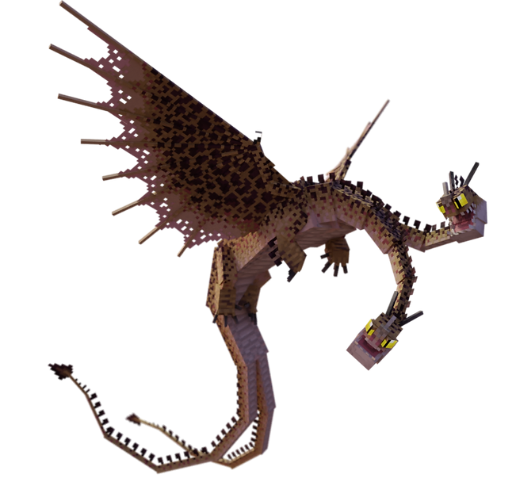
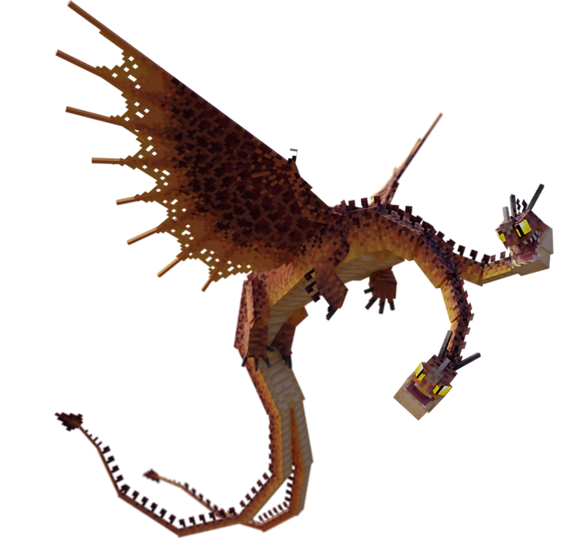
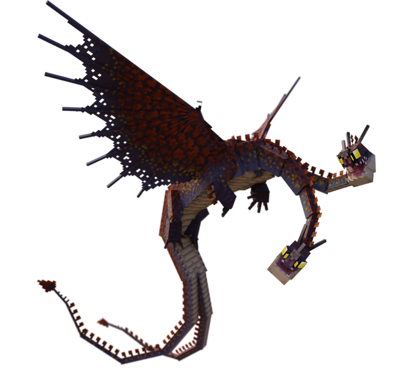
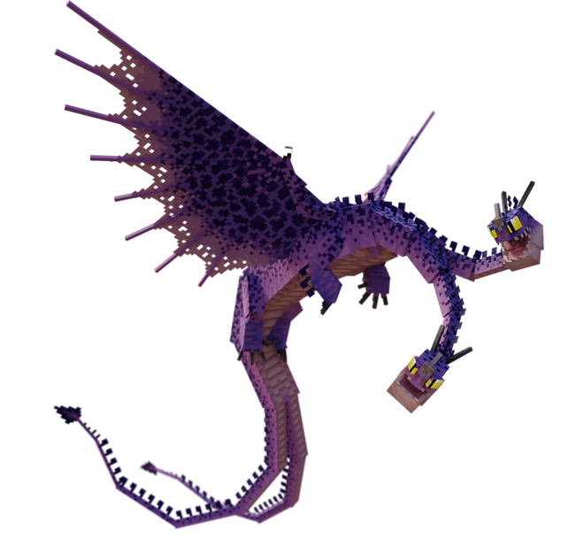
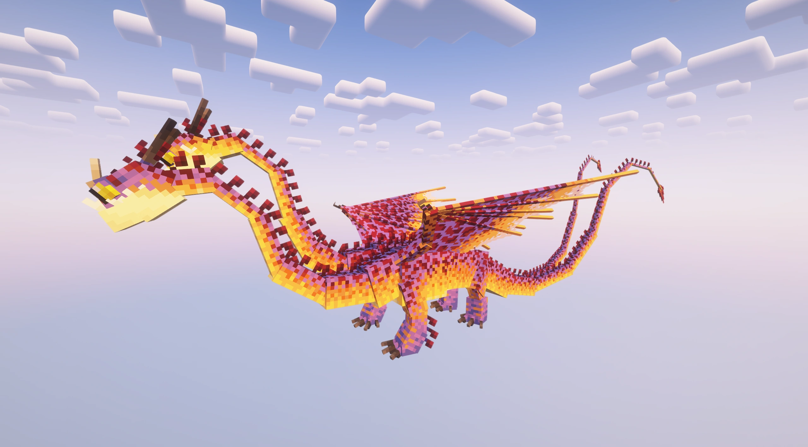
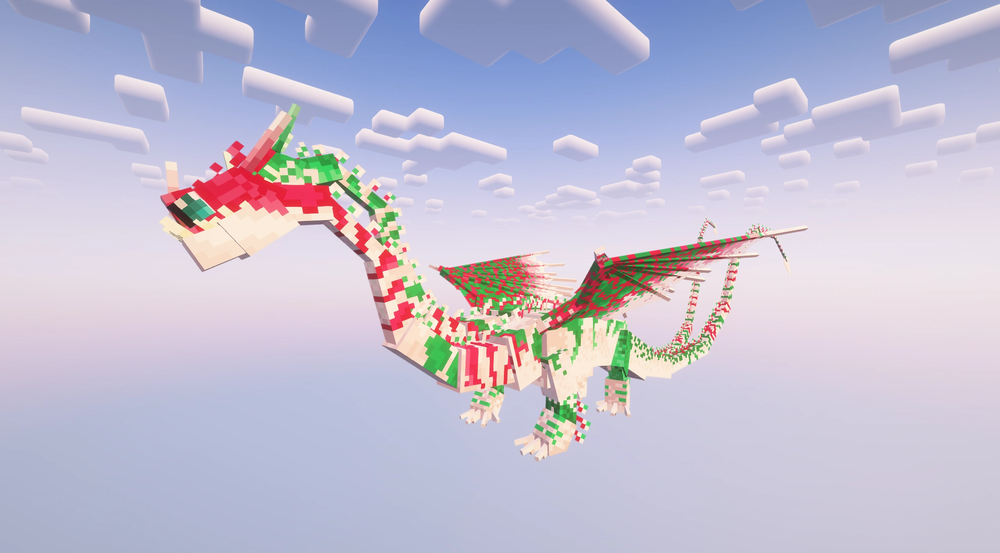
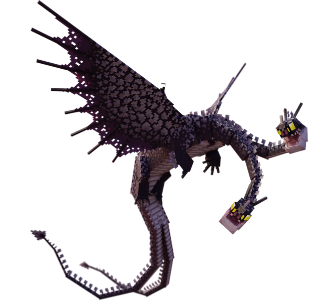

Hideous Zippleback
hydre des maraisDescription
§ 1Deux têtes : l'une crache un gaz toxique, l'autre l'étincelle qui l'enflamme.
La combinaison déclenche une explosion en chaîne sur les nuages collés — un feu d'artifice tactique en marais. Dix variantes connues, dont une « Kandy 'n' Kane » exclusive aux commandes (festive, jamais en spawn naturel).
Capacités
§ 2Gas Breath
Souffle de gaz toxique (ZipBreathProjectile). Beam cylindre rayon 1.8, dégâts 4/tick + Poison 15 s + Cécité 2 s (S33). Étalement 0.5 + frac × 1.3 (large dès la bouche, densité ×2).
Spark Breath — Étincelle Igniteuse
Allume les nuages de gaz précédemment crachés. Explosion en chaîne : un nuage explose, déclenche les voisins en cascade. Cloud height 3.0 (S39, augmenté depuis 0.5). Range ignite 32 blocs.
Apprivoisement
§ 3Tier IV — La potion sacrée.
Nourriture : Saumon, morue ou poisson tropical.
Conditions : Aucune armure ni arme · effet Force actif sur le joueur.
- Brasse une potion de Force et bois-la avant l'approche.
- Retire armure et arme.
- Tiens du saumon/morue/poisson tropical et clic droit.
- Au seuil, l'apprivoisement réussit.
Reproduction
§ 4Habitat
§ 5
A. Sparse Jungles.
B. Ice Spikes, Snowy Plains, Swamps.
Variantes (10)
§ 6
Variant 1
Sandr
Tons sablonneux

Variant 2
Fart n' Sniff
Référence comique

Variant 3
Hodd
Sombre encapuché

Variant 4
Hjarta
Cœur rouge

Variant 5
Exiled
Marbré exilé

Variant 6
Whip n' Lash
Tons fouet et corde

Variant 7
Leaf 'n' Bark
Vert et brun forestier

Variant 8
Purple 'n' Nurple
Tons pourpres

Variant 9
Hamfeist
Tons jambon fumé

Variant 10
Kandy 'n' Kane
Exclusive aux commandes (festive) — jamais en spawn naturel
Trivia
§ 7- Deux têtes synchronisées dans l'animation : gaz à gauche, étincelle à droite.
- Explosion en chaîne sur les nuages voisins : une étincelle peut déclencher une cascade dévastatrice (S39).
- Cloud height 3.0 (S39) : effet brouillard rampant au sol — 6 particules sol supplémentaires en anneau 1.6×r.
- Variante Kandy 'n' Kane : exclusive à
/summon— jamais en spawn naturel. - Son et particules d'explosion toujours joués (S33 fix : safeExplode mode NONE même si !mobGriefing).
Commande /summon
§ 8/summon isleofberk:zippleback ~ ~ ~ {variant:1}
Variantes 1 à 10. Kandy 'n' Kane (variant 10) : exclusive aux commandes, jamais en spawn naturel.